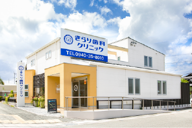
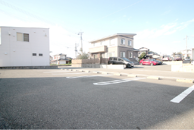
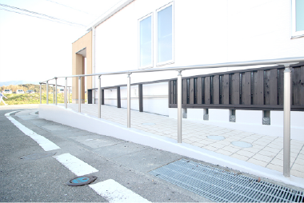

Transportation information
交通情報
| 電車 | JR福間駅より徒歩15分 |
| 車 | 駐車場15台完備 |
| バス | イオンモール福津前停留所より徒歩5分 |



Clinic information
医院情報
| 医院名 | きらり歯科クリニック | |||||||||||||||||||||||||||
| 電話番号 | 0940-35-8010 | |||||||||||||||||||||||||||
| WEB予約 | WEB予約 | |||||||||||||||||||||||||||
| 住所 | 〒811-3209 福岡県福津市日蒔野６丁目１４−３ |
|||||||||||||||||||||||||||
| 診療時間 |
受付は診療終了の30分前までにお済ませください。 |
Copyright 2021 きらり歯科クリニック